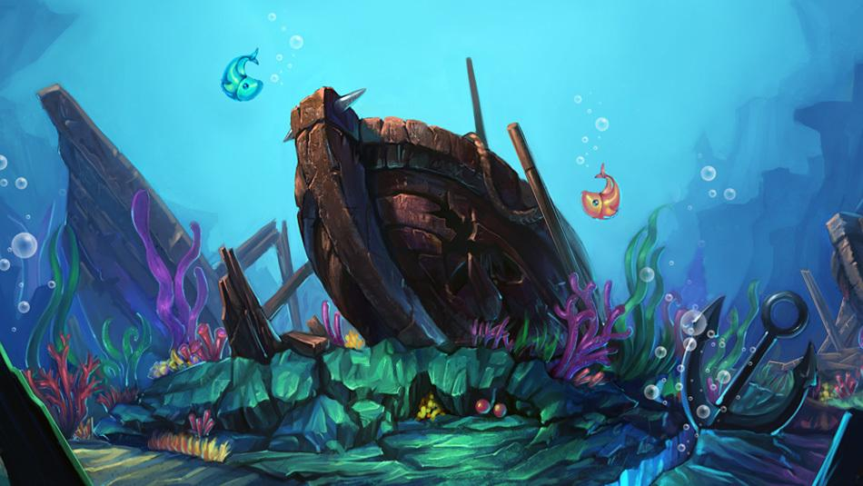

上面分析了对于单个玩家单次开炮，在捕鱼游戏中对应的“数值”原理。这是捕鱼游戏中的基本闭环。那么，当我们从时间、空间的维度扩大这个闭环，又将如何呢？从宏观数据来看，要如何发现问题呢？作为开发商，又需要把控哪些宏观数据呢？
同样，在这一部分，我们从开发商和玩家的角度来分别进行分析。一方面，我们从时间维度进行延伸。也就是说，我一个玩家在游戏中一直玩，数值概率是否会受到影响。首先，根据前面的分析判断，在玩家一直玩的同时，玩家的金币数量，一定是在不断变化的。假如玩家金币量过多，又不换房间，则成功率可能下降。这样说来，每次射击成功率都可能不同。
一般来说，金币量不太可能迅速变化，所以我们可以假设理想情况：玩家金币数量稳定，成功率不受金币量影响。当然，每次开炮射击的情况不同，在此我们也假设理想情况，比如：玩家每次都用平均火力射中1条中等鱼。那么，当玩家连续重复此操作1000次时，根据概率知识，捕鱼的结果就相当于：
收入=(总投入/每次开炮消耗金币)*击中概率*1条*每条鱼的奖金*1000次
对于一个玩家，我们把时间轴拉得越长，则结果越稳定趋向于数值概率。这一点也很容易理解，假如我们只射击一次，那么结果只可能是0或1，然而当我们射击次数变多，则越来越趋近于其数学期望。和投硬币是一个道理。因此，延伸时间维度，是让玩家收支平衡趋于稳定的一个过程。
假如我们作为开发方，看到一个玩家在长时间内的游戏收支数据符合上面公式，则可以判断此玩家数据是正常的。我们进一步扩展时间维度。“量变引起质变”，当我们时间足够长，财富堆积之后，则会产生本质影响，出现房间层面的变动。对于新手房间的玩家而言，假如我一直赢钱，然而没有换房间，当财富积累足够多时，就会出现数值概率变动，开炮的成功率降低。
一般来说，此时玩家会进入收支平衡状态，也就是说，通过概率降低，让玩家打鱼消耗的金币量等同于获得的金币量。当玩家发现自己打了许久，金币总量都没什么变动，就会开始考虑：是不是该换个高级房间玩（shu）玩（qian）了？
同样，对于高级房间的玩家来说，假如玩家长时间游戏，一定是输钱的。输着输着，可能会低于该房间进入门槛，玩家就被迫离开此房间，回到低一级的房间去了。当然，也可以选择充值，继续留在此房间，或者充很多值，进入高级房间哦。因此，足够长时间的游戏会造成玩家在不同房间之间的转换。
一般来说，开发方可以在后台监控不同房间的玩家游戏情况，金币消耗产出情况，如果都符合稳定数据，则说明整体情况正常。而稳定数据的标准，和上述逻辑是一致的。另一方面，我们也需要从空间维度进行延伸。
一款捕鱼类游戏，核心是概率，就意味着有很多不可避免的偶然因素。假如同等条件下，一条鱼捕获的成功率是1%，那么如果有100个玩家同时进行1次捕鱼，则有1个玩家是成功的，99个玩家是失败的。
同样，如果有10,000个玩家同时连续进行2次捕鱼，则可能有1个玩家是2次都成功的。通过这样的推断，当我们的样本空间足够大时，也就是足量的DAU进行了足量的射击，即使把概率压到很低很低，也还是会产出一定量的“幸运儿”，获得更多的金币。
除去上文所说的：玩家金币收入支出、不同房间转换、充值等数据，还需要关注哪些数据呢？
假如游戏内的经济系统良好，又可以从哪些具体数据反映呢？类比前文，单个玩家长时间收益趋向于均值。同样，单个房间对于大量玩家，一段时间内的收益也应该是趋于均值的。以房间为单位来看金币的消耗与产出，玩家的进入与流失，可以看出一个房间的质量，即对玩家的吸引力以及自身经济循环情况。

举个例子，假如导入了一批新玩家，那么短时间内他们一定聚集在新手房。当新手房出现大量金币饱和的玩家，则玩家会开始转移到高一级的初级房间，可以看到明显的玩家流动。这个时候，假如大量玩家离开新手房后没有去任何房间，直接流失，那么可能是新手房设定太无聊，吸引力不足，可以降低新手房天花板，加快金币积累，加强房间升级的引导，尽快把玩家送入高一级房间。
假如大量玩家进入初级房间之后很快破产流失，则可能是初级房间打中鱼的概率太低，导致玩家玩得不开心，等等。这些数据变动，都是需要通过宏观整体数据来定点分析的。以上是以房间为单位作出的大量玩家样本分析。
那么，也可以精细化分析，例如以不同鱼种为单位，来统计整体数据浮动。例如，同一个房间里有1~10级的鱼，一般来讲，越高级的鱼的数量越小，体型越大，不同鱼种对应不同的预计产量。假如某个房间里，数据表明，玩家很少打2级鱼，但是1级鱼和3级鱼的数据都比较正常。
那么我们可以推测几种原因。直观来讲，2级鱼是否体积和出现概率不合理，让玩家难以打到？假如玩家可以打到，那么又是哪些原因让玩家故意避开了这种鱼呢？可能是这种鱼性价比较低？或者长得不好看？也有可能是这种鱼的打中概率存在bug？而这些推论，也可以进入游戏去体验验证。
再例如，当打鱼数量均衡时，某种鱼总产出金币量特别多或少，则这种鱼的设计也是需要优化的。总而言之，足够大的空间样本，可以看出不同玩家在不同房间不同鱼种之间的权衡选择，从而找到游戏的成功点和需要优化的部分。纹桃科技致力于捕鱼游戏开发15年，拥有大量捕鱼游戏成功案例。
想开发一款迅速盈利的捕鱼游戏，欢迎咨询热线电话：18711739336

扫码二维码咨询更多捕鱼游戏问题

游戏产品
PRODUCTS

售后服务
SERVICE

技术支持
TECHNOLOGY

运营指导
OPERATING